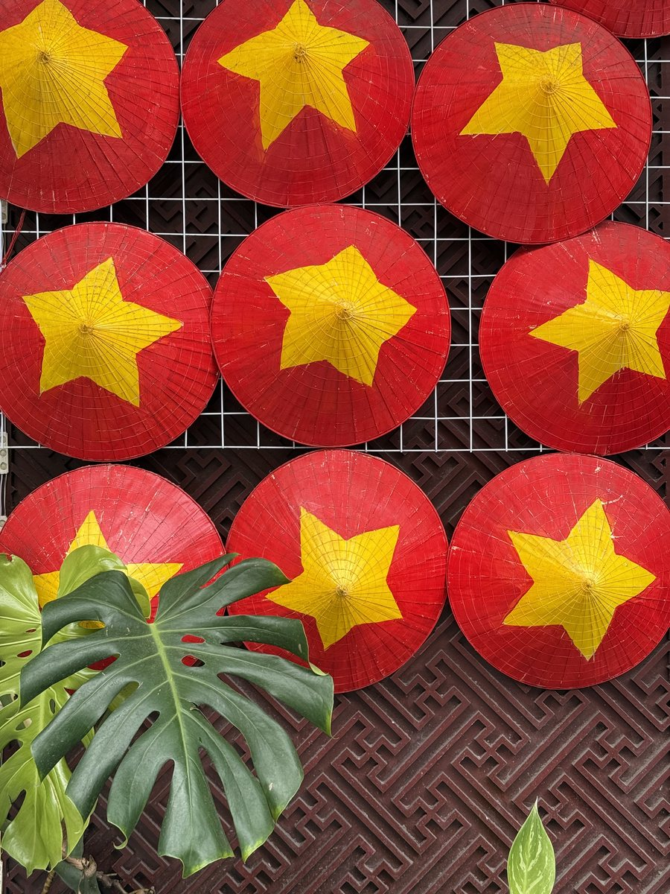
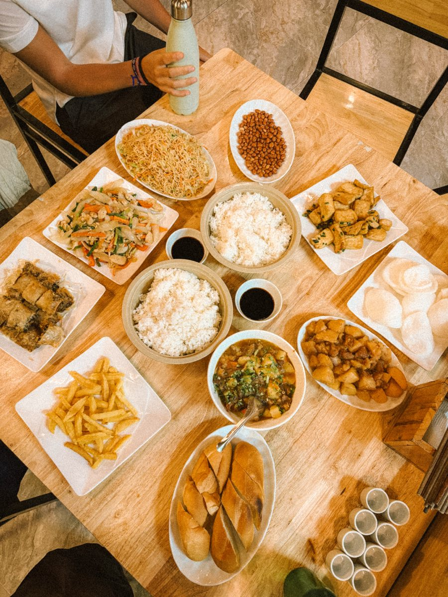
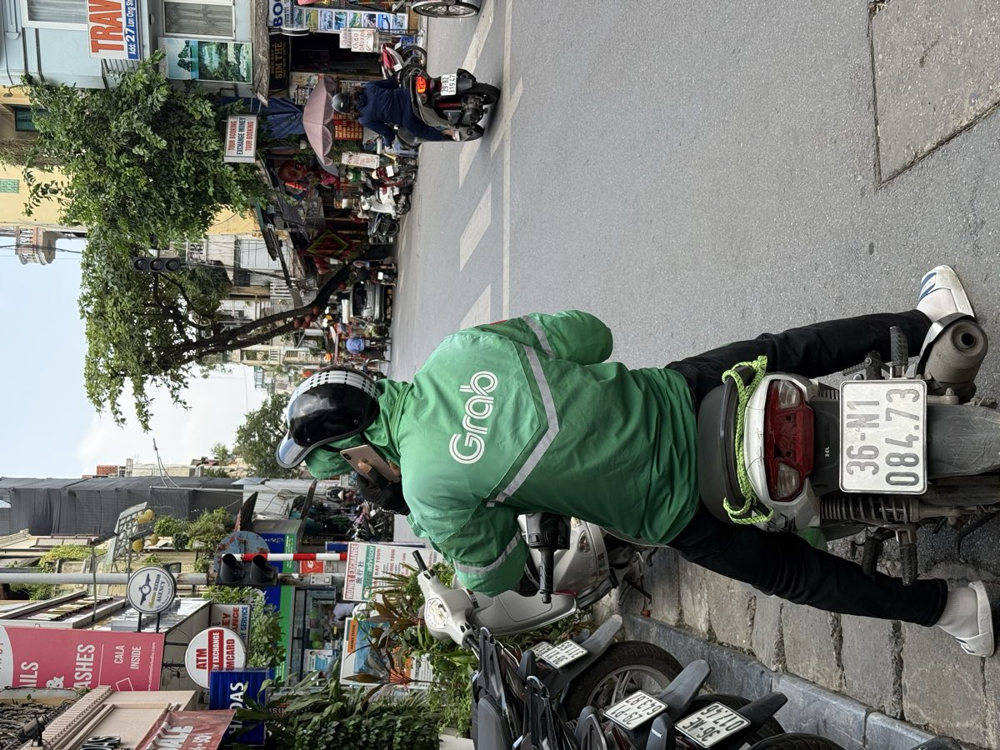
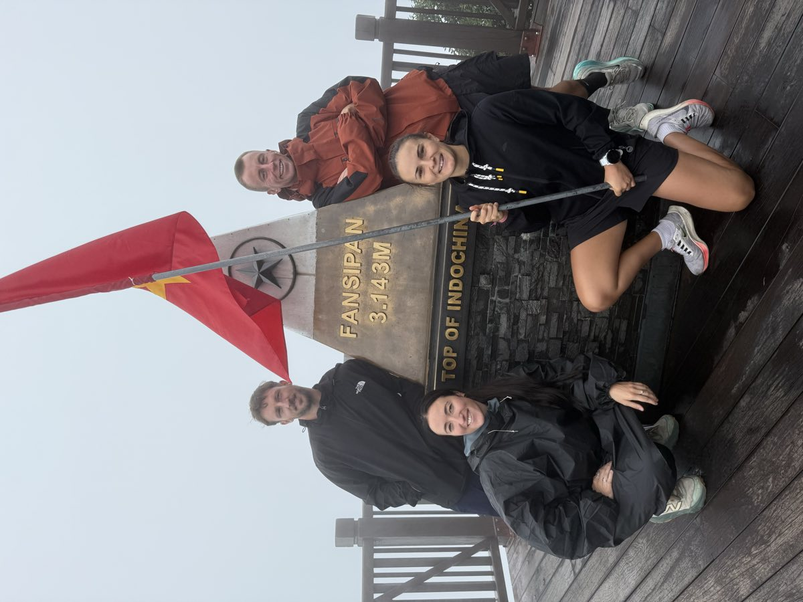
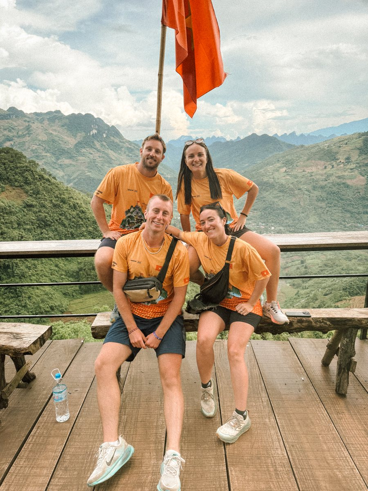
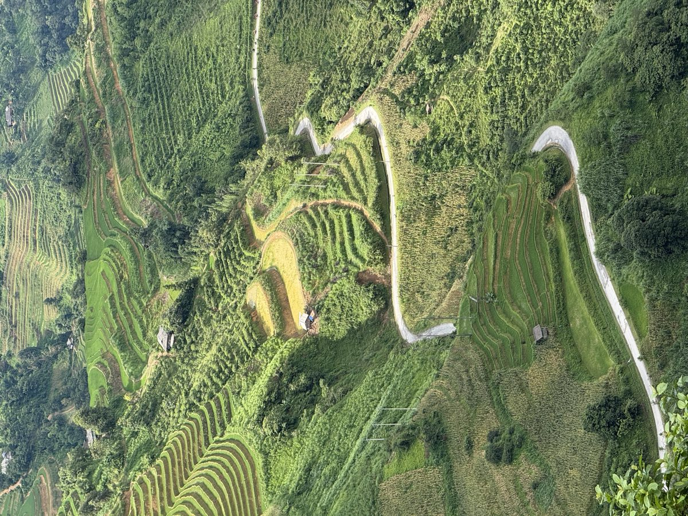
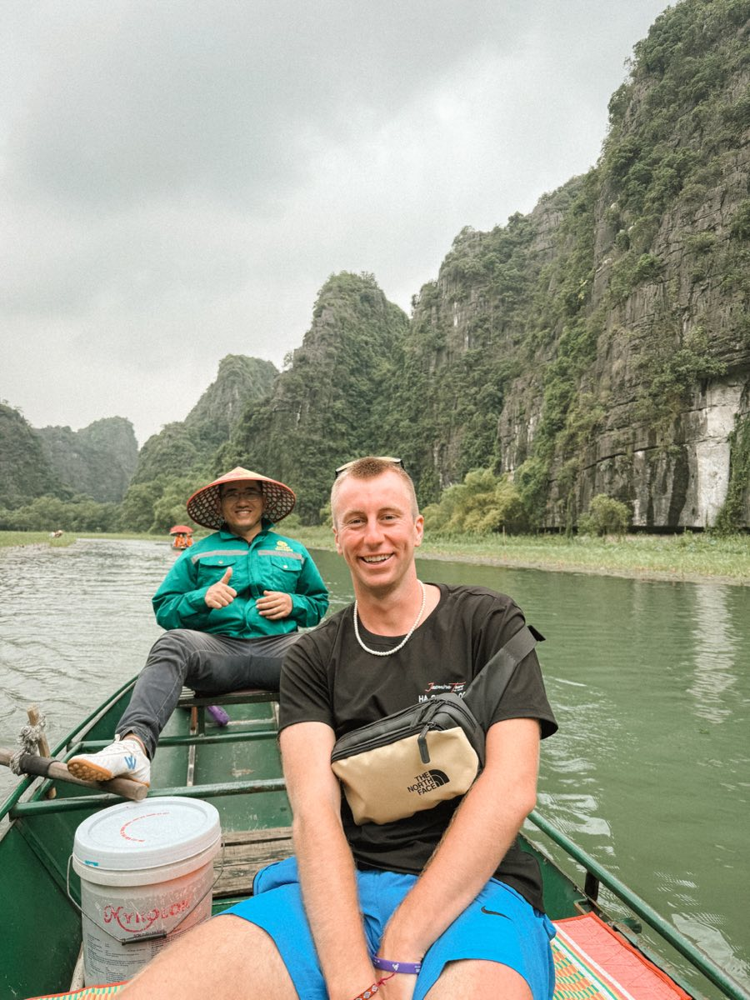
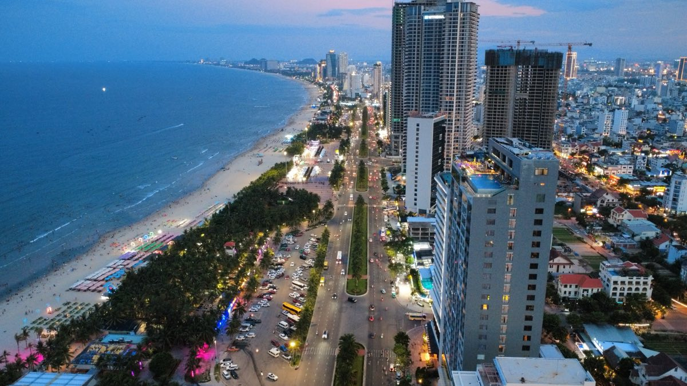
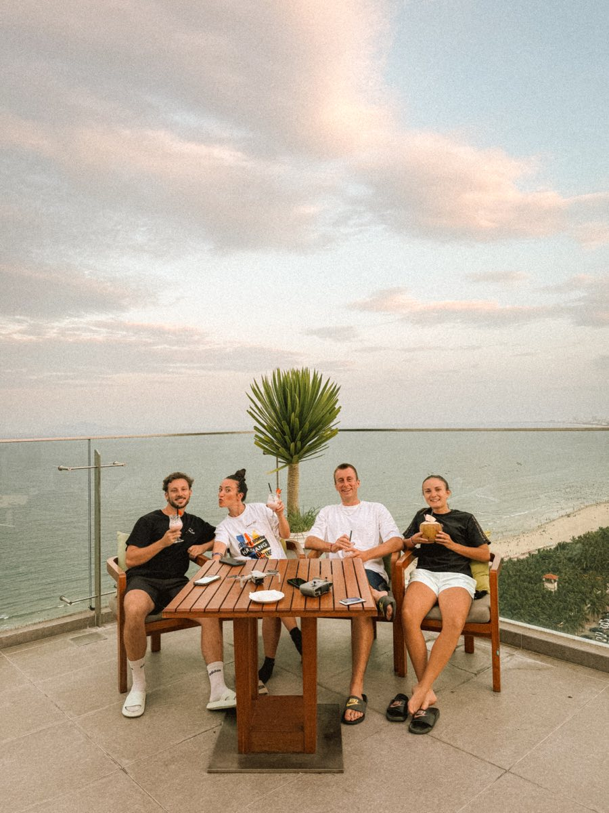
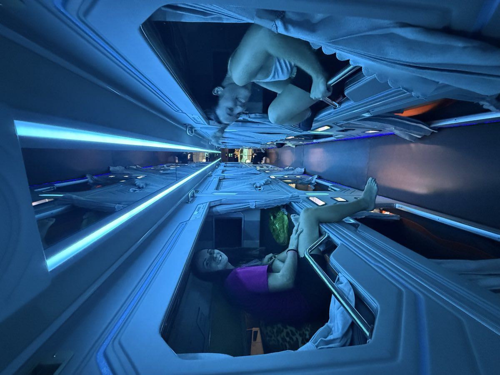

Quand partir
Le Vietnam est trop long pour avoir une seule saison. Ce qui est vrai à Hanoi ne l'est pas à Hoi An le même jour.
Dans le nord, les meilleures fenêtres sont septembre à novembre et mars à mai. L'hiver est froid et brumeux en montagne, l'été est chaud et orageux. Les rizières de Sapa sont vertes en été et dorées vers septembre.
Au centre, la saison sèche va de février à août. De septembre à novembre, c'est la période des typhons, et Hoi An se retrouve les pieds dans l'eau presque chaque année.
Autre date à connaître : le Têt, le nouvel an lunaire, entre fin janvier et mi février selon les années. Le pays entier se déplace, les transports sont pleins et beaucoup de commerces ferment plusieurs jours.

À compléter : la période de notre voyage et la météo qu'on a eue.
Le budget réel
Le quotidien coûte peu : les repas de rue, les nuits en guesthouse et les trajets en bus restent très abordables.
Ce sont les blocs organisés qui font grimper la note. Une croisière en baie, la boucle de Ha Giang avec un pilote, un trek guidé autour de Sapa. Trois lignes qui pèsent plus que deux semaines de repas.
À compléter : notre budget moyen par jour, le prix d'une nuit, d'un repas, d'un bus de nuit, de la croisière et de la boucle de Ha Giang.

Mon itinéraire
Sept étapes, du nord vers le centre. Hanoi sert de point de bascule vers la montagne, puis on redescend le long de la côte.
- HanoiLe vieux quartier et le point de départ vers le nord
- Baie de Lan HaUne ou deux nuits sur l'eau, au sud de Cat Ba
- SapaRizières en terrasses et sentiers entre les hameaux
- Boucle de Ha GiangTrois cents kilomètres de montagne, contre la frontière chinoise
- Tam CocBarque sur la Ngo Dong et marches de Hang Mua
- Hoi AnVieille ville classée, lanternes et plage à vélo
- Da NangLa base côtière, entre plage et col des Nuages

Hanoi
Le vieux quartier, ses trottoirs pleins de tabourets en plastique et sa circulation qu'on apprend à traverser au culot.
Le lac Hoan Kiem au petit matin, la rue du train, et surtout la nourriture. C'est aussi le point de départ de tout ce qui monte vers le nord.

La baie de Lan Ha
La voisine directe de la baie d'Ha Long, au sud de Cat Ba. Les mêmes pitons calcaires sortis de l'eau, avec nettement moins de bateaux.
Ça se visite en croisière d'une ou deux nuits, avec kayak entre les îlots et baignade depuis le bateau.

Sapa
Les montagnes du nord ouest, à cinq ou six heures de route de Hanoi. Rizières en terrasses à perte de vue et villages des ethnies Hmong et Dao.
Le centre de Sapa s'est beaucoup bétonné. Tout se joue en dehors, sur les sentiers entre les hameaux.
Au dessus de la vallée, le Fansipan culmine à trois mille cent quarante trois mètres. C'est le plus haut sommet d'Indochine. Il se monte à pied en deux jours ou se rejoint en téléphérique depuis Sapa.


La boucle de Ha Giang
L'extrême nord, contre la frontière chinoise. Une boucle d'environ trois cents kilomètres, à faire en trois ou quatre jours.
Le morceau que tout le monde vient chercher est le col de Ma Pi Leng, et le canyon de la rivière Nho Que en contrebas.
Deux façons de la rouler : conduire soi même, ou monter derrière un pilote local. Sans permis moto valable, la deuxième option est la seule raisonnable, l'assurance ne couvrant rien en cas de pépin.
Le détail de la boucle, étape par étape, avec le permis de zone frontalière devenu obligatoire, est dans le guide consacré à Ha Giang.


Tam Coc
Dans la région de Ninh Binh, souvent appelée la baie d'Ha Long terrestre. Mêmes pitons calcaires, mais posés au milieu des rizières.
On descend la rivière Ngo Dong en barque, ramée aux pieds par les bateliers, et on grimpe les marches de Hang Mua pour la vue d'ensemble.


Hoi An
La vieille ville classée, ses façades jaunes, ses lanternes et sa rivière. La foule y est réelle, la lumière de fin de journée aussi.
La plage d'An Bang est à quelques kilomètres à vélo, et les tailleurs de la ville cousent sur mesure en vingt quatre heures.
Juste à côté, la cocoteraie de Cam Thanh se parcourt en bateau panier, ces petites embarcations rondes en bambou tressé.
Da Nang
La grande ville de la côte centrale, à une quarantaine de minutes de Hoi An. Longue plage, immeubles modernes, pont du Dragon et montagnes de Marbre.
C'est la base pratique de la région : aéroport, cafés pour travailler, et le col des Nuages juste au nord.


À compléter : le nombre de nuits à chaque étape, et comment on a relié les étapes entre elles.
Se déplacer
Le bus de nuit est la colonne vertébrale du voyage. Les sleeping buses ont de vraies couchettes inclinées, à deux niveaux, et relient les grandes étapes pendant que tu dors. Une nuit de transport économisée, c'est une nuit d'hôtel en moins.
Quelques réflexes qui changent tout : viser une couchette du bas, à l'avant plutôt qu'au dessus des roues, prévoir un pull parce que la climatisation tourne à fond, et garder ses affaires de valeur sur soi. Les chaussures se retirent à l'entrée, on te donne un sac pour les mettre.

Le train longe la côte du nord au sud. C'est plus lent qu'un bus, plus confortable, et la portion entre Hue et Da Nang passe par le col des Nuages, à flanc de falaise.
Pour les trajets courts, Grab fonctionne dans toutes les grandes villes, en voiture comme en moto. Et le scooter reste le meilleur moyen de rayonner autour d'une étape, avec le permis qui va avec.
Où dormir
Trois semaines et sept étapes, donc des logements très différents d'un bout à l'autre.
L'hôtel de ville, bon marché dans le vieux quartier de Hanoi comme à Hoi An, presque toujours avec le petit déjeuner. Un point à vérifier à Hanoi : les immeubles y sont hauts et étroits, et l'ascenseur n'est pas systématique.
Le homestay chez l'habitant, qui est la norme à Sapa, sur la boucle de Ha Giang et à Tam Coc. Chambre simple, repas partagés avec la famille. C'est souvent le meilleur souvenir d'une étape.
La cabine de bus de nuit, qui remplace une nuit d'hôtel sur les longues liaisons et fait gagner une journée.
Le bateau, pour la baie de Lan Ha. La nuit à bord fait partie du voyage, ce n'est pas seulement un hébergement.
Un point de vigilance sur le nord. À Sapa et à Ha Giang, il fait réellement froid de décembre à février, et le chauffage n'est pas garanti. La question se pose avant de réserver, pas en arrivant.
À compléter : où on a dormi à chaque étape, le type de logement et le prix.
À ne pas manquer
Le col de Ma Pi Leng sur la boucle de Ha Giang, une nuit sur l'eau dans la baie de Lan Ha, les sentiers autour de Sapa et la vue depuis Hang Mua.
Le reste dépend du temps que tu as et de ta tolérance aux heures de bus.
À compléter : ce qui nous a le plus marqués, et ce qu'on pourrait sauter sans regret.
Les erreurs à éviter
L'erreur la plus fréquente est de vouloir faire le pays entier en deux semaines. Le Vietnam s'étire sur près de mille sept cents kilomètres, et chaque étape coûte une nuit de bus ou un vol.
La deuxième est de louer une moto sans permis valable. C'est courant, c'est toléré, et ça devient très cher au premier accident.
À compléter : ce qu'on a raté, mal préparé ou payé trop cher.
Ce qu'il faut dans son sac
Le Vietnam traverse plusieurs climats sur un seul voyage. C'est ce qui rend le sac plus compliqué à faire qu'ailleurs en Asie du Sud Est.
Des couches. Il peut faire dix degrés à Sapa et trente à Hoi An dans la même semaine. Une polaire légère et un coupe vent règlent le problème sans prendre de place.
De quoi affronter la pluie. Un poncho couvre le sac en même temps que soi, ce qu'un parapluie ne fait pas sur un scooter. Des chaussures qui sèchent vite valent mieux que des chaussures imperméables.
Pour les bus de nuit. Un cadenas pour le sac en soute, des bouchons d'oreilles et un masque. Les affaires de valeur restent en cabine, jamais en soute.
Pour la boucle de Ha Giang. Gants, veste qui coupe le vent et lunettes. On roule plusieurs heures par jour en altitude, et le froid arrive vite dans les cols.
Côté électrique. Le Vietnam est en 220 volts, avec des prises de type A, C et F selon les endroits. Les prises françaises fonctionnent presque partout, un adaptateur universel règle les exceptions.
Partie à écrire.
Tu veux qu'on construise ton voyage ensemble ?
Ce guide te donne la trame. Si tu veux aller plus loin, je monte ton itinéraire avec toi : le tracé étape par étape, les hébergements, les trajets entre les villes et les activités qui valent vraiment la journée.
On part de tes dates, de ton budget et de ce que tu as envie de vivre. Tu repars avec un programme prêt à suivre, en sachant ce qu'il faut réserver en avance et ce qui peut attendre d'être sur place.
Trois formules, à partir de 59 € pour un avis sur ton plan, 249 € pour l'itinéraire complet. Premier échange gratuit, et sans engagement.
Les liens et le matériel cités
Les plateformes de réservation, eSIM, banques et assurances que j'utilise en voyage sont réunies sur une seule page, avec mes codes de parrainage.
Page vérifiée et mise à jour le .